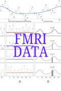

It was discovered that the human brain can recognize and classify music genres in different specific areas of the cortical surface of the brain. The study also remarked that the human brain naturally categorizes music by genre (Nakai et al., 2020). This is one of the studies that lays the groundwork for the discovery study: Brain2Music: Reconstructing music from brain activity. The study was a collaboration with Google AI, which uses an AI model for generating music from brain activity.
How does the human brain represent music?
With the help of Functional Magnetic Resonance Imaging (fMRI) scans and music embedding models like MuLan and w2v-BERT, researchers can now visualize brain activity and predict or analyze the music that the brain is processing. They collect brain data from subjects who listen to 15-second music clips while undergoing fMRI scanning. The results show which brain regions respond to music characteristics like pitch, tempo, and genre. The music embedding models help track which parts of the brain process these features. Two brain regions significantly respond to the music embedding models:
Prefrontal Cortex: This part of the brain is involved in executive functions related to attention, information processing, and mood. It also responds to music embedding models, especially MuLan, because it deals with complex, high-level thinking. To surmise, MuLan is a high-level embedding because it captures abstract information like mood, genre, and instrumentation, which the prefrontal cortex also processes.
Auditory Cortex: Although the auditory cortex comprises several regions, the study specifically focused on the primary auditory cortex, though not exclusively. This brain region primarily processes sound frequencies and patterns related to speech, music, and environmental sounds. As a result, it responds to both MuLan and w2v-BERT. MuLan is considered a high-level embedding, while w2v-BERT is a low-level embedding because it emphasizes sound patterns and vocals, rather than genre or mood. Therefore, the auditory cortex can respond to both models, as it processes both the sound itself and the context or emotional quality of the music. This ability is due to the auditory cortex's extensive reach across the brain, highlighting its versatility in processing different types of information.

How is music reconstructed from the brain?
As mentioned earlier, MuLan,specifically MuLanMusic,captures information about the complexity of music, while MuLanText is more similar to w2v-BERT, as it focuses on the literal text or lyrics of the music. This music embedding model, developed by Google, is used for reconstructing or generating music from brain activity.
To reconstruct or generate music from the brain, fMRI data must first be collected and analyzed using music embedding models (MuLanMusic and MuLanText). These models help identify the type of music the subject is processing by matching the brain activity to millions of stored music embeddings. Based on this match, the system can then reconstruct the music, effectively generating sound from brain activity.
.png)
.png)
.png)